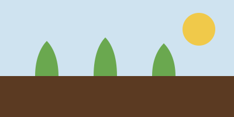

8Nov
Autumn soup lunch
Pumpkin and lentil soup with fresh bread. Free for everyone.
Community kitchen, 12pm–2pm
Come along, bring a friend, and leave with something good to eat.

Pumpkin and lentil soup with fresh bread. Free for everyone.
Community kitchen, 12pm–2pm
Help us put the allotment to bed for winter. Gloves provided.
Mill Lane allotments, 9am–12pm
Drop off tins, pasta and toiletries at any of our partner shops.